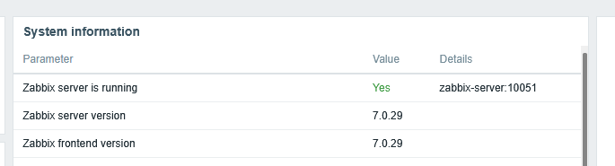
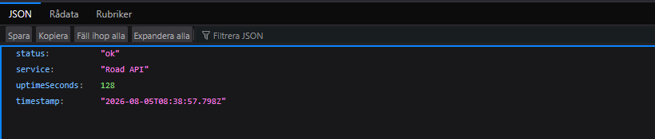
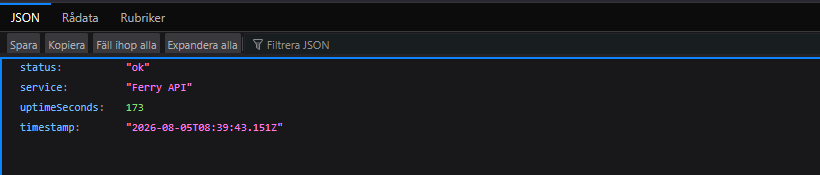

Behovet
Tre tjänster ska kunna följas separat. Driftstopp och långsam respons behöver gå att upptäcka snabbt, samtidigt som lösningen ska vara begriplig att förvalta.
Portfolio · Zabbix 7.0 LTS · lokalt verifierad
TrafficWatch är ett containerbaserat övervakningslabb för tre simulerade transporttjänster. Projektet visar hur driftbehov kan omsättas till mätvärden, larm, automation, incidentövningar och dokumenterade återställningsvägar.
Från behov till teknisk lösning
Projektet är byggt för att visa hela kedjan: design, driftsättning, datainsamling, larmmodell, felsökning, återställning och dokumentation.
Tre tjänster ska kunna följas separat. Driftstopp och långsam respons behöver gå att upptäcka snabbt, samtidigt som lösningen ska vara begriplig att förvalta.
Zabbix Server, webbgränssnitt, PostgreSQL, Agent 2 och mål-API:er separeras i Docker Compose. Konfiguration och driftsteg versionsstyras tillsammans med koden.
Zabbix-servern och samtliga tre API:er körs lokalt. Hälsosvar, systemversion och startflöde är verifierade; provisionering och incidentövningar ingår som skript.
Faktisk körning
Bilderna nedan är beskurna från den lokala körningen: Zabbix 7.0.29 rapporterar att servern är igång och de tre mål-API:erna returnerar status ok.
Systeminformationen visar Zabbix Server och frontend i version 7.0.29 samt aktiv serveranslutning.



Arkitektur
Databas, Zabbix-server, webbgränssnitt, agent och måltjänster körs separat. Det gör miljön enklare att felsöka, byta ut och skala vidare.
Det jag byggde
Sju separata tjänster, healthchecks, beständig databasvolym och nätverk med tydliga beroenden.
Road, Rail och Ferry API med normal hälsa, medvetet långsam endpoint och kontrollerat 503-fel.
Idempotent Python-skript för värdgrupp, värdar, HTTP-items, triggers och tags i Zabbix.
Bash-skript som stoppar och återställer en vald tjänst utan att förstöra databas eller konfiguration.
PostgreSQL-backup med komprimering och SHA-256-kontrollsumma samt separat hälsokontroll.
Arkitektur, operationsmanual, incident-runbook, säkerhetsbedömning, testplan och intervjunoteringar.
Kontrollerad incident
Incidentflödet är avsiktligt enkelt att repetera. Poängen är inte dramatik; poängen är att bevisa upptäckt, diagnos och återställning.
Kontrollera att Zabbix och samtliga tjänster svarar.
./scripts/healthcheck.shStoppa Rail API genom ett säkert testskript.
./scripts/simulate_incident.sh railKontrollera containerstatus, loggar och endpoint.
docker compose logs --tail=200 rail-apiStarta tjänsten och bekräfta nya mätvärden.
./scripts/restore_service.sh railÄrlig omfattning
Nästa nivå
Zabbix proxy per nätsegment eller geografiskt område.
TLS, SSO, rollbaserad behörighet och extern secrets manager.
HA för Zabbix Server och PostgreSQL samt verifierade återställningstester.
Versionsstyrda templates, SLA/SLO, underhållsfönster och change-process.
Källkod och dokumentation
Repositoryt innehåller Compose-filen, servicekoden, provisioneringsskript, driftverktyg och samtliga tekniska dokument.